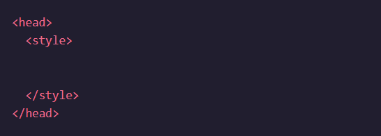
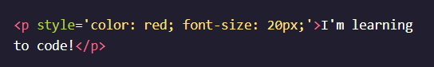

There are three different methods of writing CSS .
Although CSS is a different language than HTML, it’s possible to write CSS code directly within HTML code using inline styles.
To style an HTML element, you can add the style attribute directly to the opening tag. After you add the attribute, you can set it equal to the CSS style(s) you’d like applied to that element.

The code in the example above demonstrates how to use inline styling.
If you’d like to add more than one style with inline styles, simply keep adding to the style attribute. Make sure to end the styles with a semicolon (;).

It’s important to know that inline styles are a quick way of directly styling an HTML element, but are rarely used when creating websites. But you may encounter circumstances where inline styling is necessary, so understanding how it works, and recognizing it in HTML code is good knowledge to have.
As previously stated, inline styles are not the best way to style HTML elements.
Fortunately, HTML allows you to write CSS code in its own dedicated section with a < style> element nested inside of the < head> element. The CSS code inside the < style> element is often referred to as an internal stylesheet.
An internal stylesheet has certain benefits and use cases over inlines styles, but once again, it’s not best practice
Understanding how to use internal stylesheets is nonetheless helpful knowledge to have.
To create an internal stylesheet, a < style> element must be placed inside of the < head> element.
After adding opening and closing < style> tags in the head section, you can begin writing CSS code.

Developers avoid mixing code by storing HTML and CSS code in separate files (HTML files contain only HTML code, and CSS files contain only CSS code).
You can create an external stylesheet by using the .css file name extension, like so: style.css
With an external stylesheet, you can write all the CSS code needed to style a page without sacrificing the readability and maintainability of your HTML file.
It may seem a bit intimidating at first, but it’s not as bad as it looks! All methods contain common features in their anatomy.